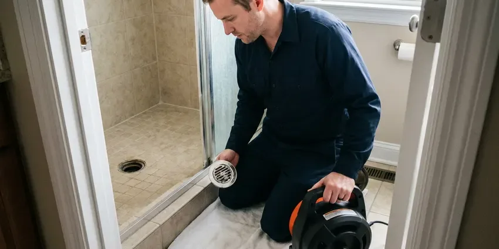
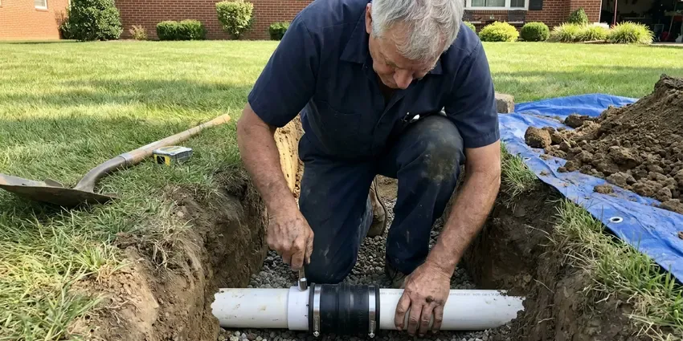

Drain Jetting in Hoover, AL
When traditional snaking isn't enough, turn to drain jetting from BRV Plumbing in Hoover, AL. We remove even the toughest obstructions, restoring your plumbing's performance.
- Fast Clog Removal
- High-Pressure Cleaning
- Prevents Future Blockages
- Experienced Technicians
Need Drain Jetting Done Right in Hoover, AL?
Get a free estimate today and experience the difference of professional drain care.
Your Go-To for Drain Jetting in Hoover, AL
When you're facing slow drains or recurrent blockages, BRV Plumbing offers expert drain jetting in Hoover, AL. Our state-of-the-art equipment ensures a thorough cleaning, restoring your drain lines to optimal flow and preventing future issues that often plague older homes in the area.
Our expertise includes:
- High-pressure water jetting for all pipe sizes
- Removes grease, sludge, roots, and mineral buildup
- Prevents recurring clogs and costly repairs

Additional Drain Services Services in Hoover, AL
From stubborn kitchen clogs to main sewer backups, our drain services in Hoover, AL clear the line and keep it clear with camera-verified results.


Drain Cleaning service for Hoover homeowners



Sewer Line Replacement near Hoover


Customers
Why Choose BRV Plumbing for Drain Jetting in Hoover, AL?
In Alabama, the humid climate and soil conditions can contribute to unique drain challenges, like accelerated root intrusion and mineral deposits. Our drain jetting service is specifically designed to tackle these local issues effectively.
- Deep Clean, Our process thoroughly cleans pipe walls, unlike snaking which only punches a hole through the blockage.
- Effective Root Removal, High-pressure water can cut through stubborn tree roots, a common issue in Alabama's established neighborhoods.
- Prevents Recurrence, By clearing all buildup, drain jetting significantly reduces the likelihood of future clogs from forming.
Citywide Coverage
No matter where you are in Hoover, our team is equipped to provide fast and efficient drain jetting services. We understand the local infrastructure and common drain issues affecting homes throughout Hoover, ensuring tailored solutions.
Experienced Team
Each technician at BRV Plumbing is highly trained in operating specialized drain jetting equipment safely and effectively. They understand the nuances of different pipe materials and blockage types, ensuring a precise and thorough cleaning every time.
Safety-First Approach
All drain jetting services from BRV Plumbing adhere to the highest industry standards and local regulations in Hoover, AL. We ensure that our methods are not only effective but also environmentally responsible, avoiding harsh chemicals.
Trusted Certified Hoover Plumbing Services Professionals
At BRV Plumbing, we take pride in providing certified plumbing services throughout Hoover, AL. Backed by recognized industry credentials, our experienced plumbers combine technical skill with genuine customer care. Whether it is repair, installation, or maintenance, we follow strict safety and quality standards to deliver lasting results you can trust.
Call Us Now PHCC Plumbing Contractor Recognition
PHCC Plumbing Contractor Recognition Better Business Bureau (BBB) Accreditation
Better Business Bureau (BBB) Accreditation Angi Certified Pro
Angi Certified Pro ISO 9001 Quality Management Certification
ISO 9001 Quality Management CertificationReliable Drain Jetting Services in Hoover, AL
Residential Drain Jetting in Hoover
For homeowners in Hoover, our residential drain jetting service tackles common issues like kitchen sink clogs from grease buildup, shower drain blockages from hair and soap scum, and slow-flushing toilets. We use specialized nozzles and pressure settings tailored to your home's plumbing system, ensuring thorough cleaning without damaging delicate pipes. This service is particularly effective for older homes with cast iron or clay pipes that tend to accumulate more sediment over time.

Commercial Drain Jetting in Hoover, AL
Businesses in Hoover, AL often face more demanding drain issues due to higher usage and specific waste types, such as large amounts of food grease in restaurants or industrial debris. Our commercial drain jetting service is equipped with powerful machines capable of clearing major blockages in larger diameter pipes. We offer flexible scheduling to minimize disruption to your business operations, providing efficient and effective solutions for commercial kitchens, restrooms, and main sewer lines.
Emergency Drain Jetting in Hoover
When you have a completely backed-up drain or an overflowing toilet, you need immediate help. BRV Plumbing offers emergency drain jetting services in Hoover to address urgent plumbing crises. Our rapid response team is available to diagnose the problem quickly and deploy high-pressure water jetting to clear the blockage, preventing further water damage and restoring functionality to your plumbing system around the clock.
Preventative Drain Jetting in Hoover, AL
Many plumbing issues can be avoided with regular maintenance. Our preventative drain jetting program in Hoover, AL helps you avoid costly emergencies by scheduling periodic cleanings. This is especially beneficial for properties with a history of recurring clogs, tree root intrusion, or those located in areas with hard water that contributes to mineral buildup. Regular jetting keeps your pipes clear and extends their lifespan, saving you money in the long run.
Grease Trap Line Jetting in Hoover
Restaurants and commercial kitchens in Hoover rely heavily on properly functioning grease traps. Over time, grease can solidify and restrict flow, leading to severe backups. Our specialized grease trap line jetting service uses hot water and high pressure to emulsify and remove stubborn grease deposits from your drain lines and the trap itself, ensuring compliance with local health codes and preventing major operational interruptions.
Root Removal with Jetting in Hoover, AL
Tree roots are a common problem for sewer lines in Hoover, AL, especially in older neighborhoods with mature trees. Roots can infiltrate tiny cracks in pipes, growing and eventually causing complete blockages. Our drain jetting service includes specialized root-cutting nozzles that slice through even thick root masses, flushing them out of your system. We can then inspect the line with a camera to assess any pipe damage and recommend further repairs if needed.
Mineral Scale and Sludge Removal in Hoover
Alabama's water can contain minerals that, over time, deposit as hard scale on the inside of pipes, narrowing the passage and trapping debris. Sludge from detergents, soaps, and organic matter also contributes to blockages. Our drain jetting service effectively blasts away these hard mineral deposits and thick sludge layers, restoring the full diameter of your pipes and improving drainage efficiency in your Hoover home or business.

Post-Jetting Camera Inspection in Hoover, AL
After performing drain jetting in Hoover, AL, BRV Plumbing often recommends a camera inspection to verify the effectiveness of the cleaning and to check for any underlying pipe damage. This allows us to ensure that all blockages have been completely removed and to identify any cracks, breaks, or misalignments that could lead to future problems. This step provides peace of mind and allows for proactive repairs if necessary.
Drain Jetting Near Me in Hoover, AL
When you search for "drain jetting near me" in Hoover, AL, you want a reliable local company that understands the specific plumbing challenges of our area. BRV Plumbing is your trusted partner, providing prompt and professional service right to your doorstep. We are intimately familiar with the local infrastructure and common causes of drain issues in this region.
Choosing a local expert for drain jetting ensures faster response times and technicians who are knowledgeable about common issues like clay pipe integrity or root intrusion from abundant local foliage. BRV Plumbing is committed to serving our Hoover neighbors with effective, long-lasting drain solutions. Just give us a call at (256) 391-9413.
BRV Plumbing at a Glance
- Fully licensed plumbing team covering Hoover, AL
- 24/7 emergency service with same-day scheduling
- Clear written estimates, no hidden fees
- 4.8-star rated by 549+ Alabama customers
Hoover Map
Hoover Information
- Population
- 92,448
- Area codes
- 205/251/256
- Service area
- Hoover and communities within 40 miles
- Nearby
- Vestavia Hills, Birmingham, Alabaster, Tuscaloosa
For homes in Hoover, AL, drain jetting is crucial due to the region's humid climate, which can foster accelerated tree root growth and contribute to the buildup of mineral deposits and organic matter in plumbing lines.
Expert Services
Trust our professionals for reliable BRV Plumbing solutions in Hoover, AL.
Our Specialized Plumbing Services in Hoover, AL
At BRV Plumbing, we provide a complete range of plumbing services across Hoover, AL. From leak detection to full system installations, our team ensures fast, precise, and affordable service for both residential and commercial properties. Explore our core services below:


How Our Drain Jetting Process Works in Hoover, AL
Our drain jetting process at BRV Plumbing is designed for maximum effectiveness and minimal disruption to your Hoover, AL property.
Request a Quote
Contact BRV Plumbing at (256) 391-9413 to describe your drain issue and schedule a convenient service appointment. We'll gather initial information to understand your needs.
On-Site Assessment
Our technician arrives, diagnoses the blockage using video inspection if necessary, and determines the best approach for your specific drain problem. We'll explain the process clearly.
High-Pressure Jetting
We insert a specialized hose with a high-pressure nozzle into your drain line, blasting away clogs, grease, roots, and debris. Water pressure is adjusted for optimal cleaning without pipe damage.
Frequently Asked Questions About Drain Jetting in Hoover
The cost of drain jetting in Hoover, AL can vary widely, typically ranging from $250 to $800, depending on the severity and location of the clog, the pipe size, and the length of the line needing service. Complex jobs, like extensive root removal or main sewer line blockages, may be on the higher end. We provide a detailed estimate after an on-site assessment.
Drain snaking typically punches a hole through a blockage to restore some flow, but often leaves debris behind. Drain jetting, on the other hand, uses high-pressure water to scour the entire inner circumference of the pipe, completely removing grease, scale, and roots for a much more thorough and long-lasting clean.
BRV Plumbing utilizes industry-leading drain jetting equipment from reputable manufacturers such as Spartan Tool and MyTana. These professional-grade machines ensure we have the power and precision to tackle even the toughest clogs efficiently and effectively.
BRV Plumbing stands by the quality of our work. We offer a warranty on our drain jetting services, which typically covers a period after the service, ensuring the problem does not recur due to our workmanship. Specific warranty details will be provided at the time of service.
Key signs you need drain jetting include frequently recurring clogs, multiple slow-draining fixtures, gurgling sounds from drains or toilets, unpleasant odors coming from drains, or sewage backups. These symptoms often indicate a significant blockage that snaking alone cannot resolve.
Yes, it is generally recommended that you or an authorized adult be present during the drain jetting service. This allows our technicians to access the necessary areas, discuss findings, and answer any questions you may have about the process or recommended next steps.
The duration of a drain jetting service in Hoover, AL typically ranges from 1 to 3 hours, depending on the severity and accessibility of the blockage, as well as the length of the pipe being cleaned. More complex situations, like main sewer line issues, might take longer.
For most homes in Hoover, an annual or bi-annual drain jetting is sufficient, especially if you experience recurring clogs or have mature trees near your sewer lines. Commercial establishments, particularly restaurants, may require more frequent jetting, sometimes quarterly, to prevent grease buildup.
What People Are Saying About Our Plumbing Experts?

Laura S.
I scheduled a water heater replacement, and the team made the process smooth and affordable. The new unit works perfectly, and they cleaned up after completing the job.
Water Heater Replacement · Birmingham, AL
Emily R.
I called BRV Plumbing for plumbing repair, and the technician was fast, polite, and thorough. They explained the problem clearly and fixed it the same day. I will definitely hire them again. Highly recommended!
Plumbing Repair · Hoover, AL
Daniel K.
A pipe burst at 11 pm and they actually answered. The plumber showed up within the hour, shut everything down, and had us back to normal the next morning. Could not ask for more.
Emergency Plumbing · Anniston, AL
James P.
Our commercial plumbing system had a leak under the sink, and BRV Plumbing handled it professionally. The plumbers arrived quickly and restored everything without disruption to our customers.
Commercial Plumbing · Hoover, AL
Mark T.
When our office needed drain cleaning, BRV Plumbing provided quick, reliable service. The plumber arrived on time and made sure every drain flowed perfectly before leaving. Very satisfied.
Drain Cleaning · Vestavia Hills, AL
Patricia H.
We had a slab leak that two other companies could not find. BRV Plumbing located it in under an hour, explained our options, and the price matched the quote to the dollar.
Slab Leak Repair · Northport, AL